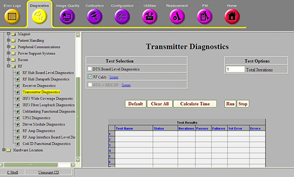
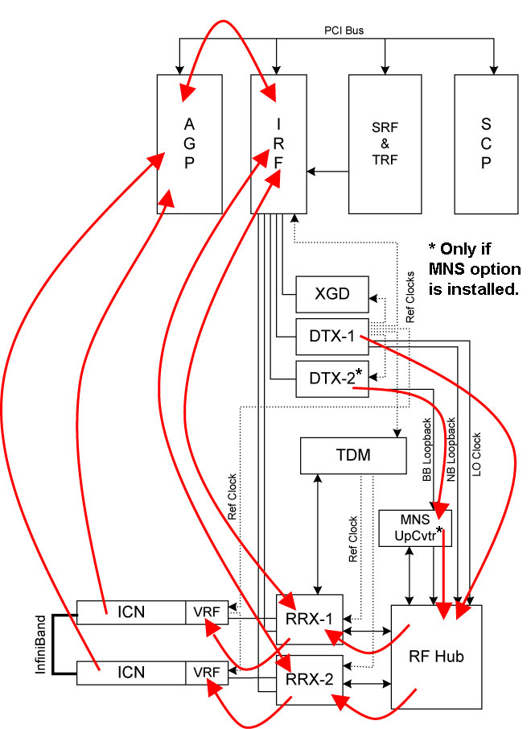

Operating Documentation
Direction 5500113, Rev# 3
Discovery MR750 3.0T Service Methods
Module Version 3.0, Version Date 11/4/09
Operating Documentation |
Diagnostics >> System Function >> RF >> Transmitter Diagnostics
Diagnostics >> System Function >> RF >> Receiver Diagnostics
Diagnostics >> Hardware Location >> PEN Cabinet >> Transmitter Diagnostics
Diagnostics >> Hardware Location >> Magnet Room >> Receiver Diagnostics
Illustration 1: RF Calibration Data Path

The RF Calibration data path diagnostic performs and tests the following calibrations: Transmit Gain (TG) calibration for the narrowband and broadband Exciters (DTX-1 and DTX-2), DC offset adjustments for the RRX modules, and R1 Gain measurements for the switch boards in the RF Hub. All of these calibrations are performed each time a TPS reset is performed on the system. The RF Calibration data path diagnostic re-runs the same calibrations, but adds some additional tests that are too time consuming to run during a TPS reset.
During the DC offset adjustment of the RRX channels, the RRX input channels are blanked and the A/D converters are adjusted until there is no DC offset. This calibration can fail if excessive DC bias is found in any channel. This calibration generates the log file: /usr/g/service/log/rrxZeroOffset_<date>.log, which contains the offset value required to zero each channel. Any RRX module that fails this calibration must be replaced.
The Transmit Gain (TG) calibration generates a table of data for each Exciter needed to set the DTX’s output attenuator to any point from 0.0 db to 39.9 dB in 0.1 dB steps. The attenuator circuit in DTX-1 and DTX-2 has a coarse and fine control. The TG calibration determines the correct coarse and fine setting needed to achieve each of the 400 TG points that can be commanded during a scan. The results of the DTX-1 TG calibration are saved to the log file: /usr/g/service/dtx1_cal_I_<date>.log. The results of the DTX-2 TG calibration are saved to the log file: /usr/g/service/dtx2_cal_I_<date>.log.
The TG calibration is followed by a TG validation. During validation, the Exciter output level is measured at each of the 400 precalculated points, and verified to be within 0.1 dB of the intended signal strength. An inaccurate TG table will result in poor control of flip angle during a scan. The results of the DTX-1 TG validation are saved to the log file: /usr/g/service/dtx1_val_I_<date>.log. The results of the DTX-2 TG validation are saved to the log file: /usr/g/service/dtx2_val_I_<date>.log.
The R1 Gain calibration measures the 13 R1 Gain steps for each channel of each RF Hub switch board. The measured gains must be within the specifications for those boards for this calibration to pass. The difference in gain between channels for each R1 step must also be within specification. During this calibration, the DTX-1 output is sent to the RF Hub control board, which sends the signal through each channel of each switch board. The DTX-1 signal is left alone while the R1 gain steps in the switch boards are changed. The results of this calibration are saved in the log file: /usr/g/service/log/r1GainCal_<date>.dat.
RRX
DTX-1 (Narrowband Exciter)
DTX-2 (Broadband Exciter - If MNS option installed)
RF Hub
Run and pass the IRF3, DTX, and RRX Board Level Diagnostics.
Illustration 2: RF Calibration DP Block Diagram

Select the RF Calibration DP test.
Click [Run].
Ensure that the diagnostic passes by reviewing the status in the Test Results table.
This diagnostic has either a passed or failed status. If the diagnostic has failed, review the error log and corresponding extended error message for subsequent actions. In the event the diagnostic reports a time out, the diagnostic may not have been executed. Retry the test. If it continues to time out, complete a TPS Reset and retry the test.